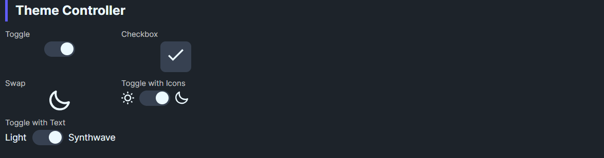

DaisyThemeController is a toggle-based switch for applying Daisy themes via DaisyThemeManager. It supports multiple display modes (toggle, checkbox, swap, text/icon variants) and syncs IsChecked with the current theme. Switching updates CheckedTheme/UncheckedTheme and can auto-adopt new themes.
This control uses DaisyThemeManager internally, which manages the application's theme resources:
DaisyProductThemeDropdownDaisyThemeLoader.ApplyThemeToApplication() instead| Property | Description |
|---|---|
Mode |
Visual mode: Toggle, Checkbox, Swap, ToggleWithText, ToggleWithIcons. |
UncheckedLabel / CheckedLabel |
Labels for light/dark (or custom) modes. |
UncheckedTheme / CheckedTheme |
Theme names to apply on off/on states (defaults: Light/Dark). |
DaisyThemeManager.ApplyTheme(...).DaisyThemeManager.ThemeChanged to sync IsChecked when theme changes externally.CheckedTheme/CheckedLabel update to that theme name.In your .xaml file (e.g., MainWindow.xaml), add the namespace and control:
<!-- Add at top of file -->
xmlns:controls="using:Flowery.Controls"
<!-- Simple toggle - just drop it in, defaults to Light/Dark -->
<controls:DaisyThemeController Mode="Toggle" />
<!-- Animated sun/moon swap (as used in Gallery) -->
<controls:DaisyThemeController Mode="Swap" />
<!-- Custom theme pairing -->
<controls:DaisyThemeController Mode="ToggleWithText"
UncheckedTheme="Light" CheckedTheme="Synthwave"
UncheckedLabel="Light" CheckedLabel="Synthwave" />App.xaml must include Flowery.Uno's theme resources in Application.Resources.MergedDictionaries:
<ResourceDictionary Source="ms-appx:///Flowery.Uno/Themes/Generic.xaml" />UncheckedTheme aligned with your base theme so IsChecked=False reflects the default look.CheckedTheme to the latest applied theme.IsChecked if you need to track theme state elsewhere; the controller will still apply themes.DaisyThemeDropdown (DaisyUI themes) or DaisyProductThemeDropdown (96 industry themes).